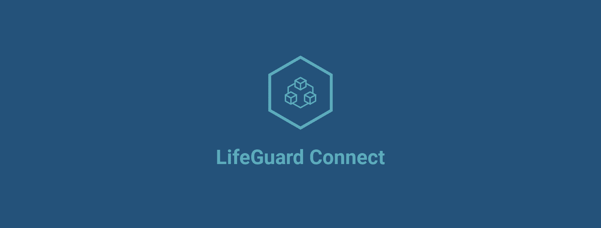
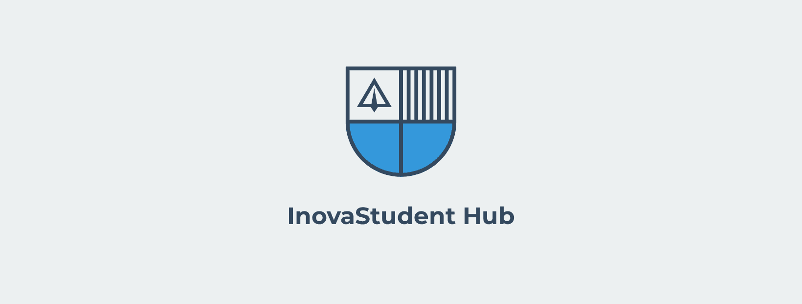
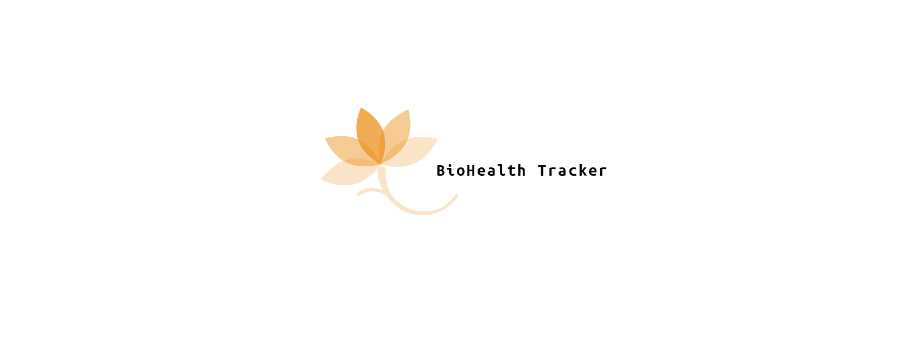

Apresentamos Aplicativo CustomFit
Elevando a Experiência dos Smartwatches BioWatchGuard
O aplicativo CustomFit nasceu da visão de oferecer aos usuários dos nossos smartwatches uma experiência de personalização sem igual. Lançado em 2021, o aplicativo redefiniu a forma
como os usuários interagem e customizam seus dispositivos BioWatchGuard, proporcionando um nível de controle e individualidade anteriormente inédito.
Passo 1: Identificação da Necessidade
A jornada para criar o CustomFit começou com uma percepção clara de que os usuários desejavam mais controle sobre a aparência e funcionalidade de seus smartwatches. A equipe
BioWatchGuard identificou a oportunidade de desenvolver uma solução que permitisse aos usuários personalizar seus dispositivos de acordo com seu estilo de vida, preferências e necessidades.
Passo 2: Equipe de Desenvolvimento Multidisciplinar
A equipe por trás do CustomFit era composta por designers de interface do usuário, desenvolvedores de software, especialistas em experiência do usuário e engenheiros de software. A colaboração
desses profissionais foi fundamental para criar uma aplicação que fosse ao mesmo tempo intuitiva e altamente funcional.
Passo 3: Design e Funcionalidades
O design do CustomFit foi cuidadosamente planejado para proporcionar uma experiência agradável e intuitiva. A interface do usuário foi projetada para ser amigável e de fácil navegação, com uma
ampla gama de opções de personalização. Os usuários podem escolher entre uma variedade de mostradores de relógio, combinações de cores, widgets de informação e até mesmo criar suas próprias interfaces.
Passo 4: Integração com Tecnologia de Ponta
A equipe de desenvolvimento incorporou as mais recentes tecnologias para garantir que o CustomFit proporcionasse uma experiência de alto desempenho e confiabilidade. Isso incluiu a integração
perfeita com os dispositivos BioWatchGuard, aproveitando as capacidades de conectividade e hardware dos smartwatches.
Passo 5: Testes e Aperfeiçoamento
O aplicativo CustomFit passou por extensos testes para garantir sua estabilidade e usabilidade em diferentes cenários. A equipe coletou feedback dos usuários durante as fases de teste e fez ajustes
para aprimorar a experiência do usuário e resolver quaisquer problemas identificados.
Passo 6: Lançamento e Recepção
O CustomFit foi lançado com entusiasmo por parte da comunidade de usuários BioWatchGuard. O aplicativo recebeu avaliações positivas por sua capacidade de proporcionar uma personalização rica e
satisfatória aos dispositivos BioWatchGuard, tornando cada smartwatch uma expressão única do estilo e preferências do usuário.
A biografia do aplicativo CustomFit é uma narrativa de como a BioWatchGuard respondeu às necessidades e desejos dos usuários, proporcionando uma solução que capacita os usuários a moldar seus
smartwatches de acordo com sua identidade e estilo. O CustomFit reflete a busca contínua da BioWatchGuard pela inovação e pela criação de experiências excepcionais para seus clientes.
Apresentamos Plataforma LifeGuard Connect
Redefinindo a Saúde através da Inovação e Colaboração

A concepção da plataforma "LifeGuard Connect" para autogestão da saúde foi um processo complexo e empolgante, que envolveu a colaboração de especialistas em saúde,
tecnologia e design. A busca por soluções inovadoras para melhorar a saúde das pessoas e a parceria estratégica com empresas de plataforma desempenharam papéis fundamentais
em sua criação.
Passo 1: Identificação da Oportunidade
O projeto "LifeGuard Connect" nasceu da identificação da crescente necessidade de uma abordagem mais proativa e personalizada para a gestão da saúde. A equipe
BioWatchGuard percebeu que a tecnologia poderia ser usada para capacitar os indivíduos a monitorar, entender e melhorar sua saúde de maneira mais eficaz.
Passo 2: Colaboração Interdisciplinar
Uma equipe multidisciplinar foi formada, composta por médicos, cientistas de dados, engenheiros biomédicos e especialistas em experiência do usuário. Essa colaboração
abrangente permitiu a convergência de conhecimentos médicos, tecnológicos e de design para criar uma solução completa e eficaz.
Passo 3: Estratégia de Parceria
Para enriquecer ainda mais o projeto, a BioWatchGuard estabeleceu parcerias estratégicas com empresas líderes em tecnologia de plataforma, como Amazon Web Services (AWS) e
Salesforce. Essas parcerias permitiram aproveitar a experiência em desenvolvimento de plataformas escaláveis e seguras, bem como a expansão do alcance da plataforma "LifeGuard Connect".
Passo 4: Desenvolvimento Tecnológico
A equipe de desenvolvimento tecnológico concentrou-se na criação de uma plataforma robusta que pudesse centralizar dados de diversas fontes, como dispositivos de monitoramento de saúde,
wearables e registros médicos. Isso envolveu a criação de uma arquitetura escalável e segura, que pudesse lidar com grande quantidade de dados e garantir a privacidade dos usuários.
Passo 5: Design Amigável e Acessível
O design da plataforma "LifeGuard Connect" foi guiado pelo princípio de ser amigável, intuitivo e acessível a todos os usuários, independentemente de suas habilidades tecnológicas.
A interface do usuário foi projetada para ser visualmente atraente e fácil de navegar, com recursos que permitem a personalização de acordo com as preferências do usuário.
Passo 6: Integração de Dados e Análise
A plataforma foi projetada para integrar dados de diferentes fontes de forma coesa. Algoritmos de análise de dados foram desenvolvidos para fornecer insights claros e úteis sobre a saúde dos usuários,
permitindo que eles acompanhassem métricas, estabelecessem metas e recebessem recomendações personalizadas.
Passo 7: Testes e Ajustes
Após o desenvolvimento, a plataforma passou por testes rigorosos para garantir que atendesse aos mais altos padrões de segurança e desempenho. A equipe realizou testes de usabilidade com usuários reais
e implementou ajustes com base no feedback para otimizar a experiência do usuário.
Passo 8: Lançamento e Crescimento
A plataforma "LifeGuard Connect" foi lançada com entusiasmo, apresentando-se como uma solução inovadora para a autogestão da saúde. A colaboração com empresas de plataforma contribuiu para a escalabilidade
da plataforma, permitindo que ela crescesse e se expandisse para atender a uma base de usuários cada vez maior.
A criação da plataforma "LifeGuard Connect" foi uma jornada marcada pela inovação, colaboração e busca incessante por melhorias na saúde individual. Através dessa plataforma, a BioWatchGuard e suas parcerias
estratégicas continuam a capacitar as pessoas a tomar medidas pró-ativas em relação à sua saúde e bem-estar.
Apresentamos InovaStudent Hub
Conectando a Inovação à Experiência Estudantil

O InovaStudent Hub é um aplicativo especialmente projetado para os estudantes
do Instituto de Inovação BioWatchGuard, oferecendo uma experiência digital abrangente
e conectada para otimizar sua jornada educacional e promover a interação com a comunidade acadêmica.
Com uma variedade de recursos e funcionalidades, o aplicativo visa melhorar o envolvimento dos alunos,
facilitar o acesso à informação relevante e fornecer ferramentas essenciais para uma experiência de aprendizado enriquecedora.
Recursos Principais:
Portal de Cursos e Materiais:
Os alunos podem acessar facilmente o material do curso, tarefas, horários e recursos de aprendizado diretamente pelo aplicativo.
Agenda Personalizada:
O aplicativo oferece uma agenda personalizada com lembretes de aulas, eventos, prazos de entrega e atividades extracurriculares.
Comunicação Instantânea:
Os alunos podem se comunicar com professores, colegas de classe e funcionários por meio de mensagens instantâneas e grupos de discussão.
Biblioteca Digital:
Acesso à biblioteca digital com uma ampla gama de recursos educacionais, artigos e materiais de pesquisa.
Notícias e Anúncios:
Mantém os alunos atualizados sobre as últimas notícias, eventos e anúncios importantes do instituto.
Oportunidades de Pesquisa e Estágio:
Os alunos podem explorar oportunidades de pesquisa, estágios e projetos colaborativos diretamente pelo aplicativo.
Integração com Redes Sociais do Instituto:
Facilita o acesso às redes sociais do instituto, permitindo que os alunos acompanhem as atividades e interajam com seus colegas.
Recursos de Saúde e Bem-Estar:
Fornece informações sobre bem-estar físico e mental, dicas de saúde e acesso a recursos de apoio.
Eventos e Workshops:
Os alunos podem se inscrever em eventos, workshops e palestras diretamente pelo aplicativo.
Feedback e Avaliações:
Os alunos podem fornecer feedback sobre os cursos, professores e a experiência geral do instituto.
O InovaStudent Hub foi criado para aprimorar a experiência dos estudantes no Instituto de Inovação BioWatchGuard, promovendo o aprendizado
colaborativo, a eficiência e a conectividade entre os alunos e a instituição. Com esse aplicativo, a BioWatchGuard demonstra seu compromisso
contínuo em fornecer ferramentas inovadoras para o crescimento acadêmico e pessoal de seus alunos.
BioHealth Tracker A Inovação Estudantil que Transformou a Saúde

O projeto NeuroFit nasceu de um encontro entre apaixonados pela neurociência, engenharia biomédica e tecnologia de saúde, todos movidos por uma visão comum: transformar a reabilitação neurológica
por meio da inovação tecnológica. A jornada começou com uma série de passos estratégicos e colaborações interdisciplinares, que eventualmente deram origem a um projeto que está revolucionando a forma
como a recuperação neurológica é abordada.
Recursos Principais:
Monitoramento Multidimensional:
O aplicativo permite o monitoramento contínuo de diversos parâmetros de saúde, incluindo frequência cardíaca, pressão arterial, níveis de oxigênio no sangue, qualidade do sono e atividade física.
Inteligência Artificial (IA) e Análise de Dados:
Utilizando algoritmos de IA, o aplicativo analisa os dados coletados e oferece insights personalizados sobre a saúde do usuário, sugestões de metas e recomendações para melhorar o bem-estar.
Alertas e Notificações Inteligentes:
Com base nos dados coletados, o aplicativo pode enviar alertas e notificações para incentivar os usuários a tomar medidas preventivas ou adotar hábitos mais saudáveis.
Integração de Dispositivos:
O BioHealth Tracker se integra perfeitamente com dispositivos BioWatchGuard, coletando dados em tempo real e oferecendo uma visão abrangente de informações relevantes.
Histórico e Tendências:
Os usuários podem acompanhar seu progresso ao longo do tempo, visualizando gráficos e análises que destacam melhorias ou áreas que precisam de atenção.
Compartilhamento com Profissionais de Saúde:
Os usuários têm a opção de compartilhar os dados com seus médicos, permitindo uma colaboração mais informada e personalizada no gerenciamento da saúde.
O sucesso do BioHealth Tracker reflete o comprometimento da BioWatchGuard em valorizar a inovação interna e a criatividade dos estudantes do Instituto de Inovação. A adoção rápida do aplicativo
demonstra a abertura da empresa para abraçar soluções pioneiras que contribuem para a saúde e o bem-estar de seus clientes. O aplicativo representa mais uma etapa na busca da BioWatchGuard por tecnologias
que capacitam as pessoas a viverem vidas mais saudáveis e gratificantes.